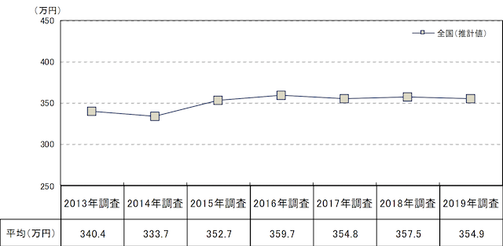
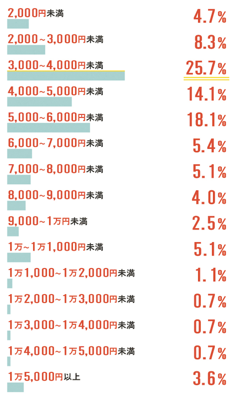
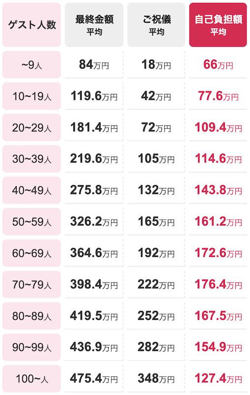
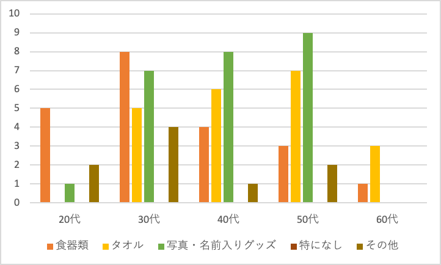

【10月ワーク】
結婚式費用について（１０月上旬〜）
株式会社 リクルートマーケティングパートナーズが行った「ゼクシィ 結婚トレンド調査2019」によると、
✔️挙式、披露宴・披露パーティ総額は354.9万円。
✔️披露宴・披露パーティの招待客人数は66.3人で、減少傾向。
✔️招待客1人あたりの挙式、披露宴・披露パーティ費用は6.8万円、1人あたりの料理＋飲み物費用の合計は19.0千円で、ともに年々増加傾向。
✔️ご祝儀総額は224.3万円で、挙式、披露宴・披露パーティにおけるカップルの自己負担額は149.5万円。
✔️挙式、披露宴・披露パーティの費用として、親・親族からの援助があった人は72.0％。援助総額は167.8万円。

→これらから結婚式にかかる費用がほぼ横ばいなのに対し、招待人数の減少＋招待客一人当たりの費用の増加は、
資料にも記述されている通り招待客に対するおもてなし志向が強まっている傾向があるだけでなく、本当に大切な人を招待する、
人付き合いのためではなく「自分たちが」感謝をする場として結婚式というものが考えられているということがわかる。
✔️結婚式の準備から当日を通じて親がうれしそうにしていたことにおいて、2013年調査から減少した項目は、
「引出物を一緒に考え、選んだこと」（8.8ポイント減）
資料に目を通して気になった点であるが、両親と一緒に引き出物を考え選んだということが「親が嬉しそうにしていたこと」という項目において
ポイント減していることは
・引き出物に対する重要度の低下
・多くがカタログギフトに頼っているという現状から、選ぶことの不必要性
などが考えられる
引き出物の金額相場について
一人当たりの引き出物にかける金額を決める基準としてよく言われているのが、
「披露宴で出す飲食費の3分の1」という考え方。
結婚スタイルマガジンが行った「結婚スタイルマガジントレンド調査2018」によると、
ゲスト一人当たりの引き出物（記念品）にかけた金額3,000～4,000円未満と答えた人が最も多く、
25.7%。3,000～6,000円未満の人が6割近くを占めている。
引き出物（記念品）1人当たりの平均額は、5,197円となっている
 
資料（右）引用元：「式場探しの決め手が見つかるクチコミサイト『ウエディングパーク』」https://www.weddingpark.net/estimate/hint/
●引出物を選択する際の重視点としては、
・「実用的であること」66.2%
・「好き嫌いが分かれない無難なものであること」61.1%
・「持ち運びが便利であること」23.6%
・「費用が手頃であること」24.8%
以上が高い割合を占めていた。
また、
●引き出物として人気の高いカタログ式ギフトを選択する際の重視点としては
・「掲載商品の品数が多いこと」62.9%
・「幅広い年齢層に合った商品が掲載されていること」48.5%
・「食料品等色々なジャンルの商品が選べること」40.5%
・「センスの良い商品が掲載されていること」33.2%
以上が高い割合を占めていた。
資料引用元：「株式会社 リクルートマーケティングパートナーズ『ゼクシィ結婚トレンド調査 2019 首都圏』」https://souken.zexy.net/data/trend2019/XY_MT19_report_06shutoken.pdf
引き出物調べ（８、９月下旬〜）
現在、「もらって残念だった引き出物」についてアンケート調査を実施中（途中経過）

カタログギフト調べ（１０月上旬〜）
引き出物アイテムで人気の「カタログギフト 」であるが、
馴染みのない人にとってはどういう仕組みで商品を得ることができるのかわからない（主に私）
そこでカタログギフトとはどういうものであるか、一から調べてみる
「カタログギフトとは、贈り物において、受け取った側がカタログの中の任意の物品を選べるシステムの形態である。
1987年にシャディが最初に取り扱い始めたとされる。
カタログギフトは、冠婚葬祭の際の贈答品や、お中元やお歳暮などで、従来は贈り主が品物を指定して送っていたものを、
受け取り手が好みの品物を選べるカタログの形にしたものである。
カタログに添付された申込書に、商品に一意で付けられた番号、および受け取り人の住所氏名などを記入し申し込むと、商品が発送されてくる。
これらの形態は通信販売におけるカタログ販売にも似ているが、あくまでも対価を支払うのは贈り主である。
また業者によっては、カタログハウスなど取次店を各所に配置し、カタログに扱われた商品の説明や受け渡し、
またはカタログギフトサービスの受注を行っている。」
引用元：フリー百科事典『ウィキペディア（Wikipedia）』https://ja.wikipedia.org/wiki/%E3%82%AB%E3%82%BF%E3%83%AD%E3%82%B0%E3%82%AE%E3%83%95%E3%83%88
※編集中
ユーザーエクスペリエンス・カスタマージャーニーマップについて（１０/８ゼミにて）※編集中